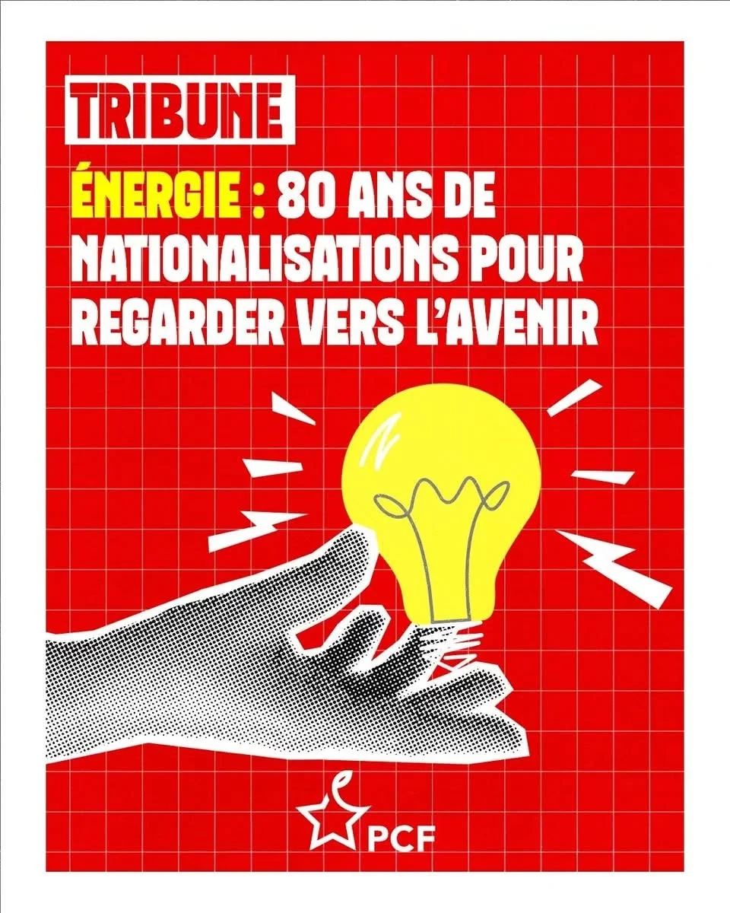
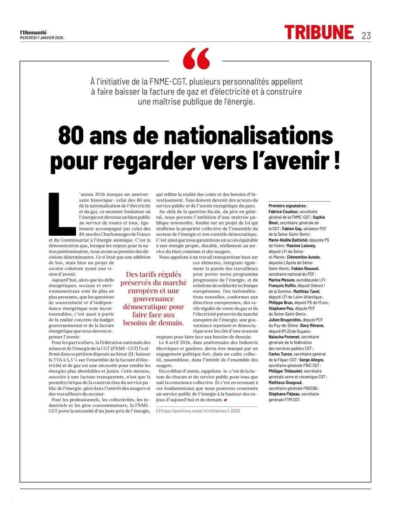

Tribune relayée
Électricité et gaz. Une tribune pour les 80 ans de la nationalisation
Date de mise à jour indiquée par Facebook · 11 janvier 2026
Repères éditoriaux
À l’initiative de la fédération Mines-Énergie de la CGT, Stéphane Peu et Julien Brugerolles ont cosigné une tribune pour les 80 ans de la nationalisation de l’électricité et du gaz. Elle demande une baisse des factures et défend l’avenir du service public de l’énergie.
Texte de la publication · Les députés communistes
En 2026, nous célébrerons les 80 ans de la nationalisation de l’électricité et du gaz, un bien commun essentiel
À l’initiative de la FNME-CGT et aux côtés de nombreuses personnalités politiques, Stéphane Peu et Julien Brugerolles ont cosigné une tribune afin d’exiger une baisse des factures de gaz et d’électricité et de porter l’ambition d’une véritable maîtrise publique de l’énergie garantissant des prix justes et accessibles, ainsi qu’une baisse de la TVA à 5,5 %.
Retrouvez le lien vers la tribune en commentaire


Sources
Les députés communistes · publication relayée par le PCF 79 · bibliothèque Facebook · AR-0002-FB-00906
À lire aussi · EDF et GDF. Fabien Gay revient sur les 80 ans de la nationalisation